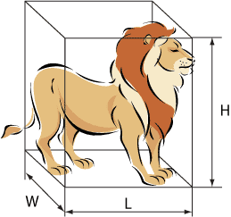

Для упрощения расчетов некоторые реальные величины заменяются их приближенным аналогом, которые хотя и влияют на точность результата, находятся в пределах допустимой погрешности вычисления
Размер пустыни
Известно, что пустыня обладает неправильной формой, которую принимаем прямоугольной. Это достигается одним из двух способов — включением частей, выходящих за пределы области пустыни (рис. 1) или их отбрасыванием (рис. 2).

В первом случае (рис. 1) повышается точность результата, поскольку вся пустыня входит в область поиска. Во втором случае (рис. 2) повышается быстрота расчетов за счет сокращения граничных частей области поиска.
За размер пустыни будем принимать величины A и B.
Размер льва
Для простоты расчетов габариты льва следует брать максимальными и включать в них хвост с кисточкой, гриву и даже усы (рис. 3). Чем больше размеры льва, тем на меньшее количество дискретных областей придется разделить пустыню. С другой стороны уменьшение габаритов повышает точность поиска льва (рис. 4).


За размеры льва будем принимать величины W, H, L, где W — ширина льва, H — его высота, а L — длина.
Размер клетки
Задача поимки льва сводится к помещению животного в клетку. Гипотетически можно выполнить клетку размером с пустыню, опустить ее сверху и решить поставленную задачу. Однако создать клетку подобных размеров не представляется возможным, поэтому мы должны исходить из реальных факторов и делать клетку, несколько превышающей размерами льва (рис. 5).

Желательно, чтобы ширина и длина клетки были кратные значениям A и B. Таким образом, всю пустыню можно поделить на ряд дискретных областей, размеры которых совпадают с размерами нашей клетки.
Положение льва
Во всех случаях положение льва считается стационарным. Во время поиска животное остается на своем месте и не перемещается до его поимки в клетку.